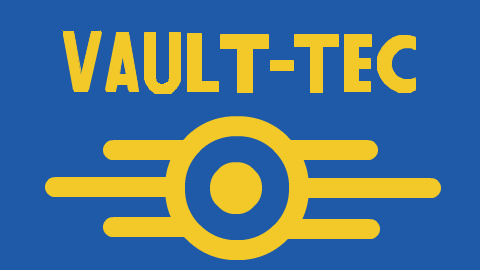
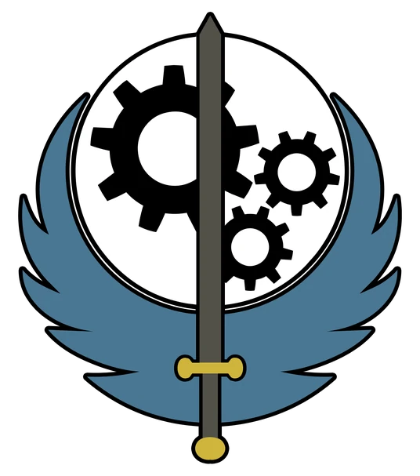
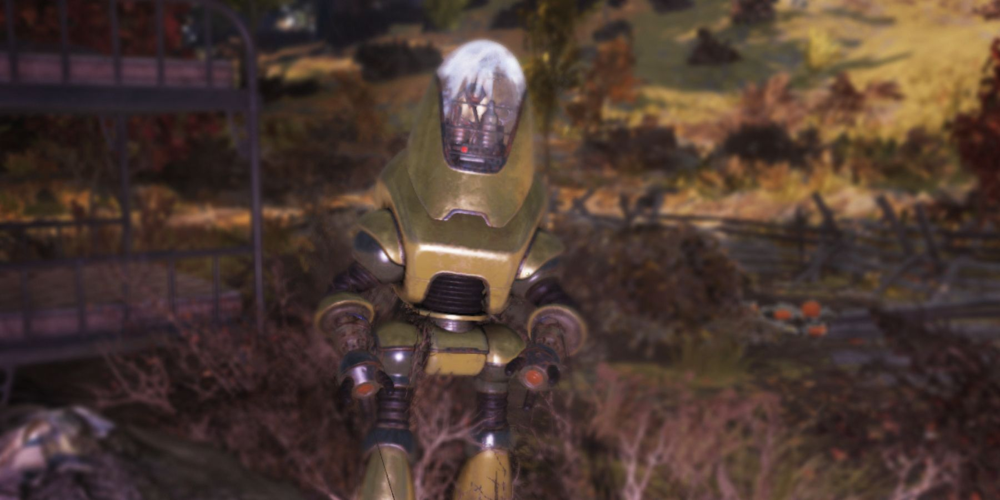
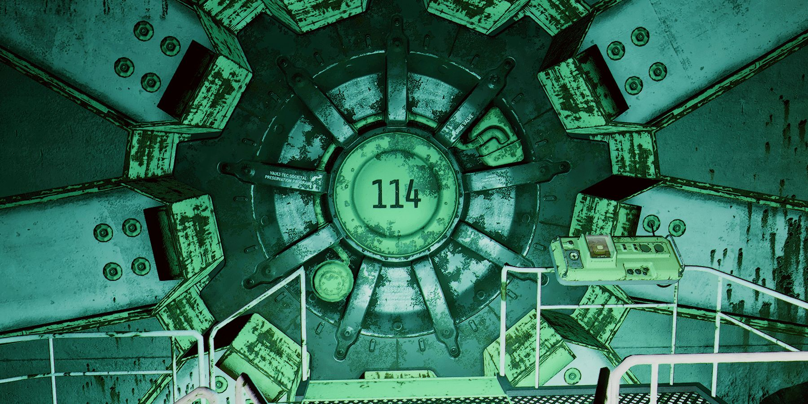

Fallout 4 is an open-world Role Playing Game (RPG) created by Bethesda Softworks and set in a post-apocalyptic version of Boston, Massachusetts, also referred to as "The Commonwealth" within the game. The core mechanics that defines Fallout 4 include exploration, combat, character building, and having multiple choices to progress through the game. Before I begin to explain the narrative arc and how gameplay plays into it, I must explain the world of Fallout.
The Universe of Fallout
Fallout is set in an alternate universe where the Cold War never ended. Society remained culturally stuck in the 1950s, along with nuclear families, anti-opposition (typically anti-communist) propoganda and old-fashioned slang, style and music never went out of style. Technology developed differently from our world. Nuclear power replaced most fossil fuels, robots were common household items. Most of Fallout's technology has advanced further than ours except for one key component: microchips. This made their computers bulky and primitive as well as lacking the minuteness of technology we have today. This also means there are no smartphones and no modern internet culture. The game also revolves around a corporation called Vault-Tec which serves asconnection between games since for the majority, start in a Vault-Tec facility. The Cold War progresses because of the fears of the people, the governments, and the corporations within the world don't want to be outdone by competitors. This sparks tensions between the United States and China as oil and energy begins to deplete across the world. Leading to uprisings between the people, corporations and government officials retreating into bunkers and eventually the first nuclear detonation in the United States to begin a short-lived nuclear war.

Fallout 4 as a Game
The world of Fallout 4 fits in perfectly with the way the games mechanics work and yourself as the player. The game starts in a "1905s-esque" suburban neighborhood with nuclear powered vehicles and homes. The player is given the option to play as one of two characters, Nate and Nora. Nate is a United States Army Veteran that fought in a conflict against China in Anchorage, Alaska and has since returned home to be with his wife, Nora, and his infant child, Shaun. Nora worked as an attorney and traveled overseas to do work. Although the game does not change depending on the character you choose to play, the customization adds to the world and helps you make it your own.
The family was a part of a select few pre-approved vault residents for Vault 111, created by Vault-Tec. Moments after choosing your character a news bulletin alerts that a nuclear attack has been commenced in major US cities. At this point during the game I felt as though the world had envoloped me in its universe. This is similar to the "suture" that Silverman (Note 1) explains in "The Subject of Semiotics". There are sirens blaring around you with United States militarized forces mobolizing to the vault to prevent non-residents from going in. Nate's family is let in just at the brink of an nuclear explosion detonating south of the neighborhood.
We cut to inside the vault where you and your family along with some neighbors are being processed into the vault while scared and unsure of the future, whether outside of the vault or in. Once processed, you enter a Cryo-Stasis chamber across from your spouse, this chamber will put you into a cryogenic state until permitted by the scientists within the vault or if overrided by an external entity. This is later interupted by a mysterious man that will attempt to kidnap your child from your spouse and unfortunately succeed, ultimately murdering your spouse. After an unknown amount of time you are set free from your chamber. As you exit the vault you see that many of the other chambers failed except for yours and your spouse's. The scientists that once roamed inside the chamber left to nothing but lab coats and bones. The vault works as a tutorial for the player, introducing the exploration mechanics and combat as you face some rather large cockroaches about the size of a domestic cat to about a medium sized dog.
The game revolves around the killing of your spouse and the kidnapping of your child. You explore the post-nuclear Wasteland to find out who the man is and who he is connected to. You have many paths to take while exploring as well as many encounters against raiders, wild irradiated and mutated animals, genetically modified humans, humans irradiated into zombies and much more. From varying factions to join and help you track down the mysterious man to different individual companions to help you survive the wasteland.
You find out the fact that you were frozen for upwards of 200 years and that the mysterious man's name is Kellogg. You receive help from a humanoid-robot-detective called Nick Valentine and your dog companion, Dogmeat, to track down Kellogg's last known locations. You eventually find Kellogg hidden in a military research facility. You must face him and avenge your family and after defeating him you discover that he is part of a mysterious entity called the Institute. The Institute is comprised of former Commonwealth Institute of Technology associates, a counterpart to what our Massachusetts Institute of Technology, which is leading in humanoid robot technology within the United States both within real world and Fallout.
The Institute became one of the few organizations to successfully avoid destruction caused by the nuclear war. The Institute focused their efforts to reseach technologies meant to help the Commonwealth recover from the war. Once discovering that Kellogg and the Institute are connected you must find them, however it is quite difficult since many people have heard rumors along with evidence through missing people and humanoid robots that roam the wasteland in place of them.
After getting clues that lead you closer and closer to the Institute, you must ultimately side with a faction to help you enter and destroy the organization.
For this, you have many options:
The Minutemen - A citizen milita that focuses on protecting settlements and rebuilding the Commonwealth through unity.
The Brotherhood of Steel - A militarized faction that seeks to control advanced and destructive technologies to prevent misuse.

The Railroad - A secretive group dedicated to freeing and protecting synthetic life from oppression.
Each one of these factions have their own motives and methods for getting into the Institute. Choosing any of these factions will result in the ultimate destruction of the Institute as a whole and depending on which faction you choose can result in the destruction of some of the others.
Once entering the Institute, you encounter a young roughly ten year-old Shaun behind a glass play area. Your character yells for him trying to reach out to him but Shaun seems confused and scared. Shaun does not know your character. After a few more moments of trying to reassure Shaun, a deactivation sequence is announced from the door by an elderly man. Referred to as Father by the game but introduced by himself to the player as Shaun, your once infant child and now leader of the Institute. He explains that the Institute had taken him as he was the only child that was left untainted child in the Commonwealth. The Institute broke into the sealed vault to find Shaun to perfect the humanoid robots known as synths, short for synthetic humanoids. After explaining everything Shaun offers you an alternative to join the Institute and create anew with the Institute.
The Institute - A secretive underground organization of elite scientists who believe humanity's future depends on technological advancement, even at the cost of ethics and individual freedom.
The choice is ultimately up to the player. If the player chooses the former three factions, the player ends the game with "The Nuclear Option" which detonates the nuclear fusion reactor inside the Institute's facility, erradicating the Institute from the Commonwealth. However, if the player chooses to side with the Institute, you help them destroy the disruptive Brotherhood of Steel and Railroad.
After destroying both factions, you speak to Shaun one last time before he passes to then take on his role as leader of the Institute and granting the player the "Nuclear Family" ending.
The Reason for Fallout 4
The main reason for picking Fallout 4 as the game to analyze is mostly because of it's humorous interactions between the player and the world, as well as the world and the player. Sometimes the best lines are the ones you least expect. Here is an example of a humorous random encounter from another installment in the Fallout franchise: Fallout 76.

Random Insult Generator
Click the button to generate random insult.
The Humor of Fallout
The humor is often dark and crude but it is normalized within the world of Fallout because of how deconstructed the world is. Throughout the entirety of Fallout there is not a central government that takes over. There are many factions that assume power but will eventually get toppled over once again. The Institute for example, ruled over the Commonwealth by using synths to "protect" the people that resided but could be destroyed by the player and its allies, along with every other faction in Fallout 4. It is not exclusive to Fallout 4 either. In previous iterations of Fallout the former United States government leaders took shelter underground in West Virginia and on off-shore oil platforms to then form the Enclave set to work with Vault-Tec to create a new society to follow the exact kind of government these leaders would want for their people.
The game creates this self awareness in its jokes. The series uses the aforementioned American exceptionalism, Cold War paranoia, and even corporate greed and consumer culture as its basis for the jokes. An example of American exceptionalsim and Cold War paranoia is the following, a clip of the main weapon used by the Brotherhood of Steel to breach the Institute.
If video does not play, copy and paste: https://www.youtube.com/watch?v=BoBoo0zB8yY
<
Liberty Prime is a pre-war robot a enormous scale meant to turn the tide of war between China in Anchorage but was never deployed. Its main reason for production was to fight the Chinese and was programmed with some very patriotic lines. Almost absurdly patriotic. This along with multiple games within the Fallout franchise such as a Wack-A-Communist game similar to Wack-A-Mole and a "space invaders-esque" game that also just has communists instead of aliens.
There are also an abundance of "Duck and Cover" style cartoons showing Vault-Tec's mascot, Vault Boy, how to survive in the Wasteland.
Warning: Graphic Content including Cartoon Violence and Cartoon Gore
If video does not play, copy and paste: https://www.youtube.com/watch?v=AY2jPAb6BOQ
Vault Boy is shown doing all sorts of shenanigans as he trie to figure out how the Wasteland works. Often dying in his failed attempts yet, he still smiles through most of it, if he is still in one piece to show you at least. Vault Boy's cheerful deaths throughout these videos serve as a parody to Anzieu's Theory of Crying (Note 2) by replacing the vulnerability and emotional appeal with corporate optimism, showing the game's satirization of corporate greed and consumer culture that suppreses genuine distress.
The humor within the jokes based on corporate greed and consumer culture are often a little harder to hit. The player usually has to dig a little deeper to find these however they often use environmental storytelling to be told. For example:

Vault 114 is a vault designed and created by Vault-Tec under Park Street Station in Boston to shelter the wealthy and influential elites such as politicians, CEOs, and executives. However, their leader was specifically chosen to be an incompetent leader with no leadership skills. His job was to control these wealthy people as each one has a task to fulfill in this isolated society. The humor lies in the flip of the corporate hierarchy and that the society will eventually fail by design.